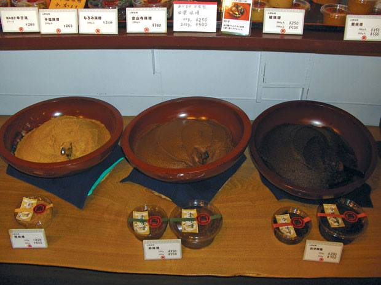

Lạc vào xứ thần tương
14.08.2013Thực hành lời khuyên của những người Nhật sành ăn, tôi ghé lại Akusuhi supermarket ở số 5 Lê Thánh Tôn, quận 1, hỏi mua một hộp tương miso giá cao nhất, gần 200.00 đồng. Chỉ toàn tiếng Nhật và cô thâu ngân cũng không giúp tôi thoát khỏi cái sự dốt thứ tiếng này.
Trước đây vài năm, có một danh gia về tương có kho cho tôi một vài miếng cá bằng thứ tương do chính ông ta chế biến. Cá kho ngon thật. Tôi, lúc đó, cũng thử ra siêu thị mua một hộp tương gochujang Hàn Quốc, đem về đối chứng nhưng thấy không ngon và thơm bằng.
Tương miso cách nay 750 năm
Người Nhật khăng khăng rằng gochujang không phải là miso chút nào, vì đó chỉ là bột nhão đậu nành trộn lúa mì, gia vị và v.v. để lên men. Chắc là họ cũng sẽ nói tương (Việt) chẳng phải là miso chút nào.
Thứ tương miso tôi mua về là loại tương vàng như chao Việt, cũng đem kho với cá bằng nồi kho chuyên dụng suốt tám tiếng đồng hồ. Lúc kho và cả lúc ăn vị thơm hơn. Thế là phải sục sạo vào xứ sở thần tương này thôi.
Miso, theo như một phóng sự của CNN, có nguồn gốc ở một thị trấn cổ Yuasa, quận Arida, Wakayama. Cách đây 750 năm, một linh mục người Nhật đã đến Yuasa sau chuyến đi từ Trung Quốc về. Lúc đó theo ông trở về là một công nghệ mới để làm miso. Bây giờ miso đã trở thành thứ tương lừng danh và phức tạp, đầy tinh tế trong ẩm thực Nhật.

Từ trái sang: shiromiso, akamiso và awasemiso. Ảnh: TLCK
Cũng giống như cách làm tương ở Việt Nam, miso là thứ bột lên men tự nhiên được sản xuất bằng hỗn hợp đậu nành nấu chín, muối, và thường thêm thành phần khác như gạo trắng hoặc đỏ, hoặc lúa mạch, hoặc đại loại một loại ngũ cốc nào đó. Bột tương có thể nhão mềm hoặc đặc, và màu sắc từ vàng nâu nhạt đến đỏ nâu đến nâu sôcôla sậm, và vị tương thay đổi từ hơi mặn và ngọt đến rất mặn và chát. Thường thì miso được đóng hộp có bột ngọt và đạm.
Màu sắc của miso, cũng giống như của nước tương shoyu của Nhật, có thể là một chỉ số khá chỉnh về độ nồng của hương vị, tuổi tương và độ mặn. Nói chung, càng nhạt màu thì vị cũng nhạt theo và ngả sang ngọt. Miso màu nhạt cũng là miso còn mới hơn so với miso màu sậm. Cũng có ngoại lệ, nhưng đó là cơ bản để dễ nhớ.
Tương càng lâu, vị càng nồng, nhưng lâu quá lại kém ngon. Miso trên thị trường thường có độ tuổi từ sáu tháng đến hai năm.
Những dòng tương chính theo màu sắc
Shiromiso – tương trắng – là từ dùng để chỉ loại tương vàng đến nâu nhạt. Tương này dịu hơn những loại miso khác, có vị ngót. Đây là loại tương thông dụng trong nấu ăn – có thể nấu súp miso hoặc xốt ướp cá hoặc thịt – người Nhật ướp cá hoặc thịt với miso đến 12 tiếng trước khi đem chiên. Nếu tiền ít, nhà chật thì chỉ nên sắm loại tương đóng nhãn “ngọt vừa”. Điều này thì nhân viên ở Akusuhi supermarket chuyên trị hàng Nhật không giúp bạn được, nếu món ấy chỉ dành cho dân Nhật, nhãn hàng toàn tiếng Nhật.
Akamiso – tương đỏ – là từ màu đỏ nâu của miso. Thường thì nó mặn hơn (nhưng không phải luôn luôn) so với shiromiso. Nếu trên nhãn có ghi phiên âm inkamiso hoặc miso đồng quê, bạn có thể chắc chắn là nó thơm nồng và mặn.
Awasemiso – tương pha – là loại tương trộn hai hoặc nhiều dòng tương lại với nhau. Đây cũng là một chọn lựa tiện nghi nếu bạn không muốn sắm một lúc nhiều thứ miso.
Tương có nước dùng
Bạn nên biết miso thường được dùng chung với nước lèo (từ cá hoặc từ xương heo), nên một số loại được trộn sẵn. Nếu là người thọ trai bạn hãy tìm loại tương không có gia vị hoặc mutenka miso.
Bảng thành phần trên bao bì sẽ ghi rõ, và nếu có một vài loại men thì sẽ ghi là koji.
Cũng có các loại xốt miso như sumiso gồm miso với giấm, đường và rượu mirin (rượu gạo giống như sake nhưng độ cồn nhẹ hơn). Miso làm xốt ướp gọi là misozuke gồm miso gia thêm mirin, nước tương, tảo bẹ konbu, v.v. Xốt tương thương mại thường có thêm bột ngọt hoặc các chất điều vị.
BÀI VÀ ẢNH: KHỞI THỨC
Sài Gòn Tiếp Thị
- Nước tương Nhật vẫn chậm tiến
- 16.08.2013
- Lạc vào xứ thần tương
- 14.08.2013
- Tamari, MISO và một cách sống
- 22.04.2013
- Nước tương dưỡng sinh Tamari nguyên dương
- 10.07.2010